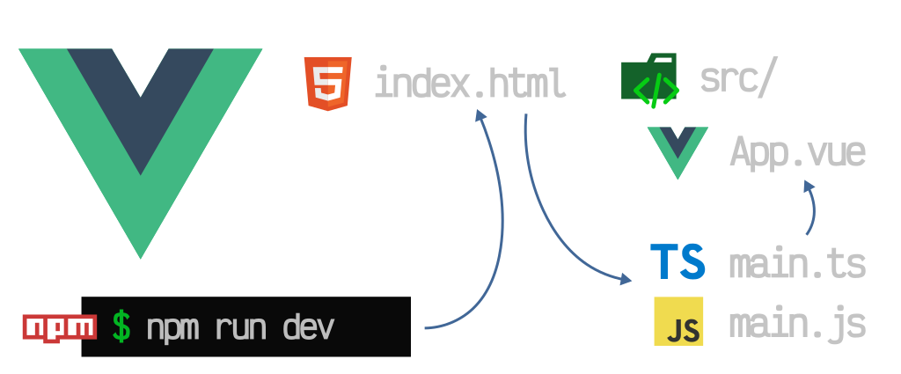

Introducción

En esta página vamos a conocer qué es un framework, para qué sirve Vue.js, cómo crear una aplicación local y qué son los componentes
¿Qué significa Framework?
Un framework es una estructura que ofrece herramientas para desarrollar programas y páginas web de una forma más organizada, sin tener que empezar todo desde cero.
Cada framework tiene sus propias herramientas y sirve para facilitar diferentes tareas de programación
¿Qué es Vue.js?
Vue.js es un framework de JavaScript que se utiliza para crear interfaces de usuario y páginas web interactivas.
Permite trabajar con HTML, CSS y JavaScript, actualizar los datos de una página y organizar el código de forma más sencilla.
Características
- Es flexible y fácil de integrar.
- Permite crear componentes reutilizables.
- Ayuda a desarrollar páginas interactivas.
¿Cómo crear una aplicación local?
Para crear una aplicación en Vue necesitamos tener instalado Node.js y utilizar una terminal
Primero ejecutamos el comando npm create vue@latest para crear el proyecto
Después entramos en la carpeta del proyecto con cd nombre-del-proyecto.
Luego ejecutamos npm install para instalar las dependencias y npm run dev para iniciar la aplicación.
Finalmente, abrimos en el navegador la dirección local que aparece en la terminal.
¿Qué son los componentes?
Los componentes son partes de una página que se pueden reutilizar, como un menú, un encabezado o una lista de productos
En Vue permiten dividir una aplicación en partes más pequeñas y mantener el código organizado
¿Cómo se usan?
Se crean generalmente en archivos con extensión .vue. Después se pueden importar y utilizar dentro de otros componentes para mostrar diferentes partes de la página.
Ventajas
- Organizan el código.
- Permiten reutilizar contenido.
- Facilitan los cambios en la aplicación.